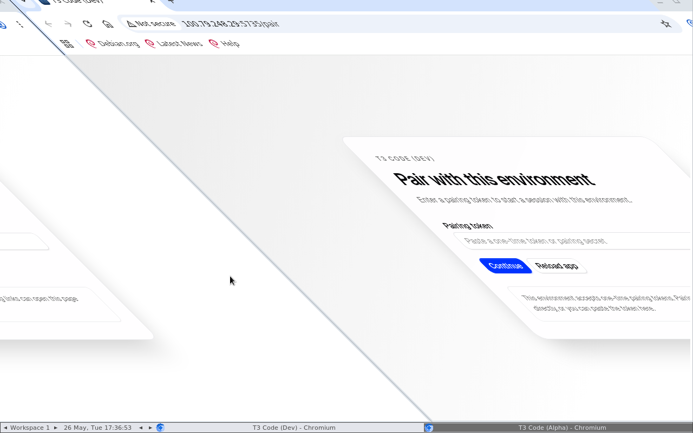
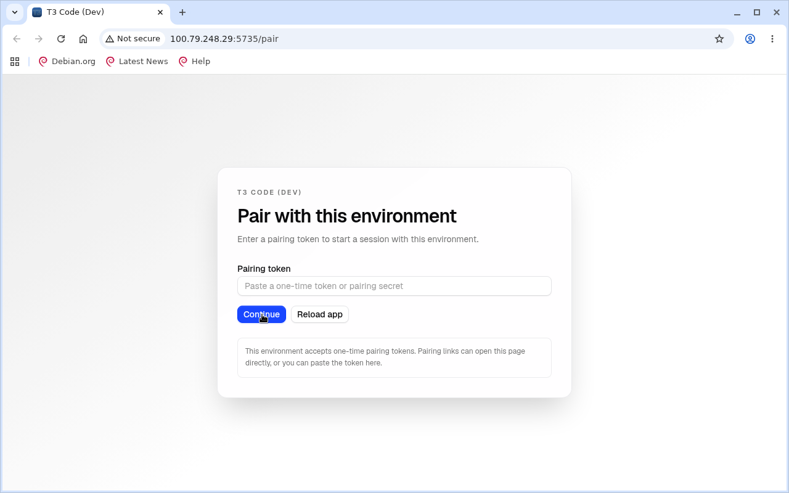

Generated 2026-05-26T17:38:55.826Z
t3code-thread-tab-icons
Project: /home/ubuntu/github/t3code
noVNC: http://127.0.0.1:6081/vnc.html
Artifacts: /home/ubuntu/github/t3code/.proof-artifacts/sessions/t3code-thread-tab-icons
Summary
Status
stopped
45.8 s
Screenshots
2
paired-app-after-token.png
Recordings
0
none
Failures
0
Last event: stop
Screenshots


Recordings
No recordings captured.
Timeline
- start 2026-05-26T17:36:21.656Z
{"type":"start","at":"2026-05-26T17:36:21.656Z","container":"proof-artifacts-t3code-thread-tab-icons","image":"proof-artifacts/desktop:0.1.0","imageSource":"local","noVncPort":6081} - novnc-ready 2026-05-26T17:36:21.971Z
{"type":"novnc-ready","at":"2026-05-26T17:36:21.971Z","url":"http://127.0.0.1:6081/vnc.html"} - open 2026-05-26T17:36:25.879Z
{"type":"open","at":"2026-05-26T17:36:25.879Z","url":"http://127.0.0.1:5734/pair#token=[redacted]","fullscreen":true} - screenshot 2026-05-26T17:36:31.394Z
{"type":"screenshot","at":"2026-05-26T17:36:31.394Z","label":"paired-app-initial","file":"/home/ubuntu/github/t3code/.proof-artifacts/sessions/t3code-thread-tab-icons/screenshots/paired-app-initial.png"} - exec 2026-05-26T17:36:47.241Z
{"type":"exec","at":"2026-05-26T17:36:47.241Z","command":"sh -s","stdin":true,"status":0} - screenshot 2026-05-26T17:36:53.906Z
{"type":"screenshot","at":"2026-05-26T17:36:53.906Z","label":"paired-app-after-token","file":"/home/ubuntu/github/t3code/.proof-artifacts/sessions/t3code-thread-tab-icons/screenshots/paired-app-after-token.png"} - stop 2026-05-26T17:37:07.491Z
{"type":"stop","at":"2026-05-26T17:37:07.491Z","container":"proof-artifacts-t3code-thread-tab-icons"}
Logs
No logs captured.
Manifest
{
"schemaVersion": 1,
"events": [
{
"type": "start",
"at": "2026-05-26T17:36:21.656Z",
"container": "proof-artifacts-t3code-thread-tab-icons",
"image": "proof-artifacts/desktop:0.1.0",
"imageSource": "local",
"noVncPort": 6081
},
{
"type": "novnc-ready",
"at": "2026-05-26T17:36:21.971Z",
"url": "http://127.0.0.1:6081/vnc.html"
},
{
"type": "open",
"at": "2026-05-26T17:36:25.879Z",
"url": "http://127.0.0.1:5734/pair#token=[redacted]",
"fullscreen": true
},
{
"type": "screenshot",
"at": "2026-05-26T17:36:31.394Z",
"label": "paired-app-initial",
"file": "/home/ubuntu/github/t3code/.proof-artifacts/sessions/t3code-thread-tab-icons/screenshots/paired-app-initial.png"
},
{
"type": "exec",
"at": "2026-05-26T17:36:47.241Z",
"command": "sh -s",
"stdin": true,
"status": 0
},
{
"type": "screenshot",
"at": "2026-05-26T17:36:53.906Z",
"label": "paired-app-after-token",
"file": "/home/ubuntu/github/t3code/.proof-artifacts/sessions/t3code-thread-tab-icons/screenshots/paired-app-after-token.png"
},
{
"type": "stop",
"at": "2026-05-26T17:37:07.491Z",
"container": "proof-artifacts-t3code-thread-tab-icons"
}
],
"screenshots": [
{
"label": "paired-app-initial",
"file": "/home/ubuntu/github/t3code/.proof-artifacts/sessions/t3code-thread-tab-icons/screenshots/paired-app-initial.png",
"capturedAt": "2026-05-26T17:36:31.394Z"
},
{
"label": "paired-app-after-token",
"file": "/home/ubuntu/github/t3code/.proof-artifacts/sessions/t3code-thread-tab-icons/screenshots/paired-app-after-token.png",
"capturedAt": "2026-05-26T17:36:53.906Z"
}
],
"recordings": [],
"name": "t3code-thread-tab-icons",
"width": "1280",
"height": "800",
"project": "/home/ubuntu/github/t3code",
"artifacts": "/home/ubuntu/github/t3code/.proof-artifacts/sessions/t3code-thread-tab-icons",
"noVncUrl": "http://127.0.0.1:6081/vnc.html",
"noVncPort": 6081,
"noVncListen": "127.0.0.1",
"network": "host",
"targetUrl": "http://127.0.0.1:5734",
"networkInferredFromUrl": true,
"browserFullscreen": true,
"vncPort": 5901,
"container": "proof-artifacts-t3code-thread-tab-icons",
"containerUser": "1001:1001",
"image": "proof-artifacts/desktop:0.1.0",
"imageId": "sha256:6785bf31c1950a4f9839eec9f077eb8de1422e17dfb9cfd723de7a1f567fbad5",
"requestedImage": "proof-artifacts/desktop:0.1.0",
"imageSource": "local",
"startedAt": "2026-05-26T17:36:21.653Z",
"stoppedAt": "2026-05-26T17:37:07.491Z"
}